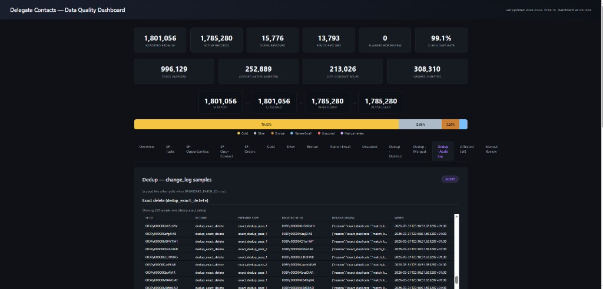
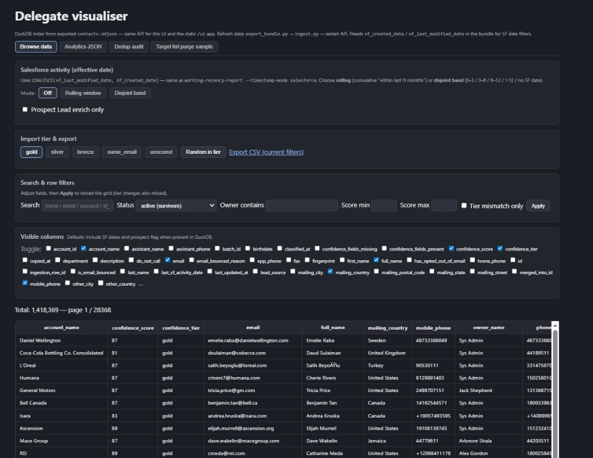

We take raw delegate contact data from Salesforce — including related records such as tasks, opportunities, and orders — and run it through an automated pipeline that classifies, cleans, deduplicates, free-enriches, target-filters, and surfaces data in dashboards and the Delegate visualiser. A final true enrichment phase prioritises contacts using dashboard signals, recency, and target-list fit.
Typical active distribution (illustrative — use live dashboard counts for current numbers):
| Tier | Typical count | Role |
|---|---|---|
| Gold | 1,418,369 | Strong profiles — full identity and reachability |
| Silver | 229,621 | Strong with minor gaps |
| Bronze | 93,972 | Basic info; several fields missing — weak band |
| Name + Email | 42,746 | Minimal but often contactable — weak band |
| Unscored | 572 | Insufficient structured data — weak band; includes uncontactable stubs |
| Total active | 1,785,280 |
Weak data = Bronze, Name+Email, and Unscored only. Within Unscored, 572 records (~0.03% of the active total) are effectively uncontactable.
Heuristic for junk / duplicate stubs: empty or fragmented rows (e.g. random email with almost no other data); if created seconds before/after another record where the lead name matches the email local-part, treat as duplicate, merge, and fill empty fields from the survivor.
The flow is split into three charts so PDF export does not overflow or glitch. Read 1 → 2 → 3. Dashboard and visualiser run in parallel after the target gate; both feed true enrichment.
flowchart TB
SF[(Salesforce
read-only)]
subgraph P1["Phase 1 — Extract"]
E1[Bulk API jobs
CSV stream]
E2[ingestion_rows
JSONB]
E3[ingestion_batches]
E1 --> E2 --> E3
end
subgraph P2["Phase 2 — Classify"]
C1[Score + fingerprint
tier tables]
C2[Rebuild contacts_working]
C1 --> C2
end
subgraph P3["Phase 3 — Clean"]
D1[Exact + fuzzy dedupe]
D2[change_log
full JSON merge/delete]
D3[Remap Tasks/Ops
review-scan]
D1 --> D2 --> D3
end
SF --> E1
E3 --> C1
C2 --> D1
flowchart TB
subgraph P4["Phase 4
Free enrichment"]
F1[link-unscored
pair hints]
F2[Prospect / Lead backfill]
F3[EPP scan
Orders / phone]
F1 --> F2 --> F3
end
subgraph P5["Phase 5
Target filter"]
T1[Target accounts
+ titles only]
end
F3 --> T1
flowchart TB
T0["After Phase 5
gated cohort"]
subgraph P6["Phase 6
Review (parallel)"]
R1["Dashboard
KPIs · samples"]
R2["Visualiser
DuckDB · search"]
end
subgraph P7["Phase 7
True enrichment"]
V1[Prioritise stale + fit]
V2[Role check]
V3{"Silver+ and
still in role?"}
V4[Skip enrichment]
V5[Paid / ops queue]
V1 --> V2 --> V3
V3 -->|yes| V4
V3 -->|no| V5
end
T0 --> R1
T0 --> R2
R1 --> V1
R2 --> V1
Full Bulk export of Contacts, Leads, Accounts, Campaigns, Events, Tasks, Opportunities, Orders into raw staging (JSON).
Score every contact and assign tiers; rebuild contacts_working.
Exact + fuzzy dedupe; manual review. Any merged or deleted row is logged with full fields in JSON — no data is unrecoverable.
Fuzzy batch match → prospect/Lead backfill → EPP/Order signals. Included at no extra cost to the programme.
Restrict to target accounts and titles so only in-spec delegates continue.
Dashboard: KPIs, tier bar, tabbed samples — always example records; deleted and merged contacts remain scrollable with audit context. Visualiser: in-depth search across Salesforce fields; split view to compare groups; current, deleted, and merged rows in the export bundle.


At this step, the groupings are the classification tiers (and dedupe outcomes) after target filtering — use the dashboard counts as the official split.
Prioritise using dashboards and exports: e.g. contacted over ~10 months ago and matching target lists. Role check: if still in role and tier is Silver+, enrichment is usually not required.
| Safeguard | Meaning |
|---|---|
| Salesforce read-only | No write-back; exports are read-only. |
| Dry-run before apply | Mutable stages support preview. |
| Full audit trail | Merges/deletes/enrichments logged with context. |
| No unrecoverable deletes | Merged/deleted records logged with full JSON. |
Salesforce → Raw staging → Classify → Clean & dedupe (full audit) → Free enrichment (3×) → Target list filtering → Dashboard + Visualiser → True enrichment
Delegate Data Ingestion E2E — April 2026. Source Markdown: DELEGATE_DATA_INGESTION_E2E.md